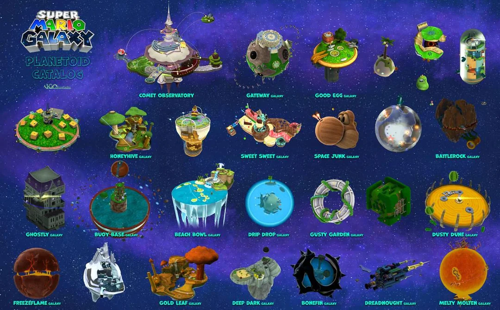
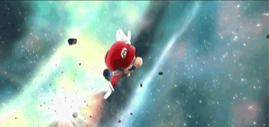
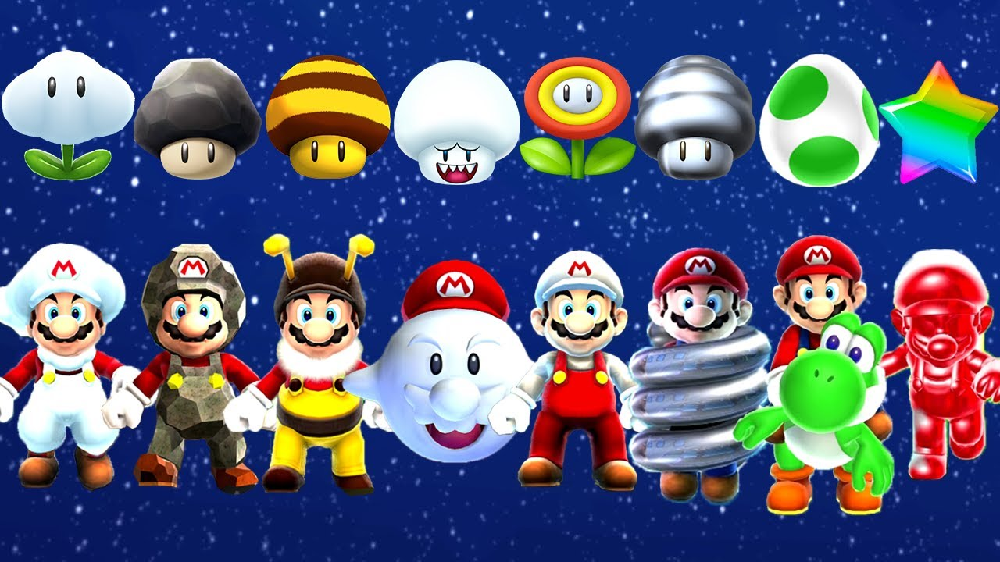
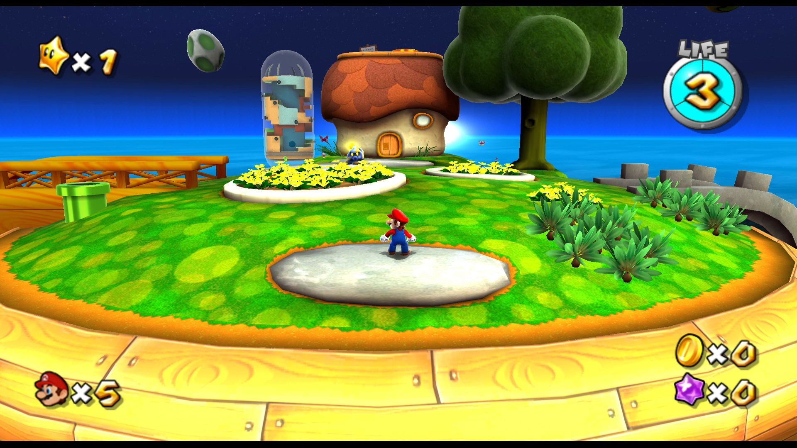
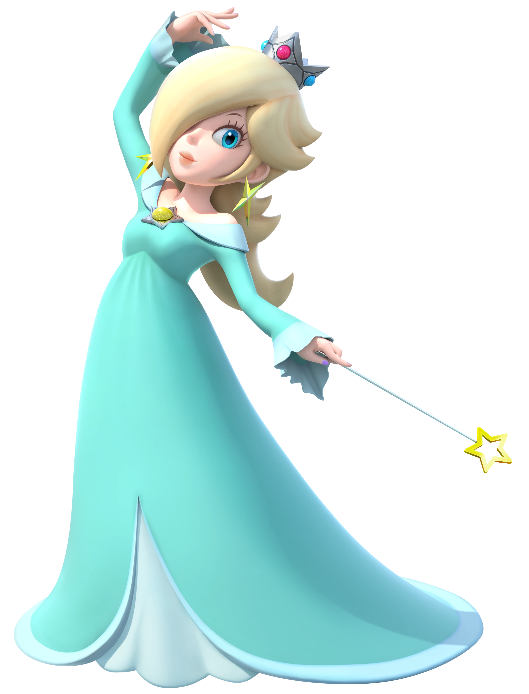
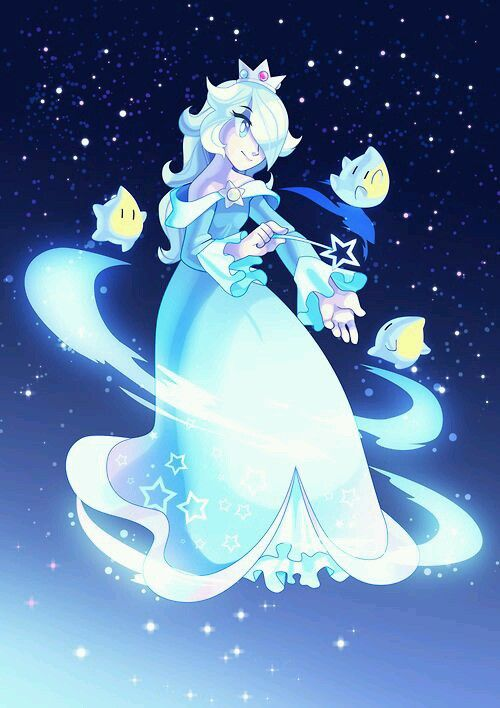

Bienvenido a Super Mario Galaxy
Explora el universo y ayuda a Mario a salvar la galaxia.
Gravedad y Planetas Flotantes
Explora cómo la gravedad afecta los planetas, lo que permite a Mario caminar sobre paredes y techos, y saltar entre planetas.
Movimiento de Mario
Mario tiene una variedad de movimientos especiales, como saltos acrobáticos y giros, que le permiten superar obstáculos y enemigos.
Objetos y Power-Ups
Descubre los power-ups clásicos de Mario, como la Super Estrella, Champiñón Boo, Champiñón Abeja o el Champiñón Roca que otorgan habilidades únicas para Mario.
Movimentos de la camara
La cámara en Super Mario Galaxy está diseñada para seguir al jugador de manera fluida, permitiendo una experiencia de exploración 3D sin ser demasiado confusa. Los jugadores pueden ajustar la vista utilizando los controles del Wii Remote y el Nunchuk, lo que proporciona una mayor libertad para observar el entorno.
Estela
Estela (en inglés Rosalina) es un personaje de la saga de Super Mario, que debutó en Super Mario Galaxy (2007) para la consola Nintendo Wii. Ella es una figura clave en el juego y, a partir de ese momento, ha aparecido en varios títulos de la franquicia. Estela tiene una personalidad misteriosa y sabiduría cósmica, siendo una figura maternal que guía a Mario en su aventura para rescatar a la Princesa Peach.
Apariencia
Estela es una mujer alta, de piel clara, con un vestido largo de color azul celeste. Su cabello es rubio y tiene una tiara en la cabeza. Ella siempre se representa como una figura serena, con una actitud tranquila y sabia. A menudo se la muestra flotando en el aire, como si estuviera en sintonía con las estrellas y el universo.
Poderes
Estela tiene una conexión profunda con el espacio y las estrellas, lo que le otorga habilidades especiales. Puede controlar el poder de las Power Stars y tiene la capacidad de moverse a través del espacio y de las galaxias. Además, posee una nave espacial llamada "Comet Observatory", que usa para viajar entre las galaxias y ayudar a Mario en su misión.
Destello
Destello es un personaje del universo de Super Mario Galaxy, un videojuego de plataformas lanzado para la consola Nintendo Wii en 2007. En el juego, Destello es una figura clave y actúa como el guía y compañero de Mario durante su aventura en el espacio.
Apariencia
Es una pequeña criatura que tiene una forma de estrella de color amarillo. Tiene una cara con grandes ojos azules. También tiene una pequeña sonrisa y una especie de "corona" o halo brillante encima de su cabeza.
Personalidad
Es un personaje amigable y lleno de energía, con una actitud optimista y alegre. Actúa como una figura sabia que asiste a Mario y le ofrece consejos a medida que avanza en su misión.
Poderes
Uno de sus poderes más útiles es su habilidad para atacar enemigos mediante el lanzamiento de "destellos" de energía.

Historia
La historia de Super Mario Galaxy sigue la estructura clásica de Mario luchando contra Bowser para rescatar a la Princesa Peach, pero esta vez, el escenario cambia radicalmente. Al inicio del juego, Mario asiste a un festival en honor a la Princesa Peach, quien es secuestrada por Bowser. Sin embargo, lo interesante de la historia es que el villano no solo la captura, sino que también la lleva a través del espacio, utilizando una nave espacial que ha secuestrado estrellas y galaxias enteras.